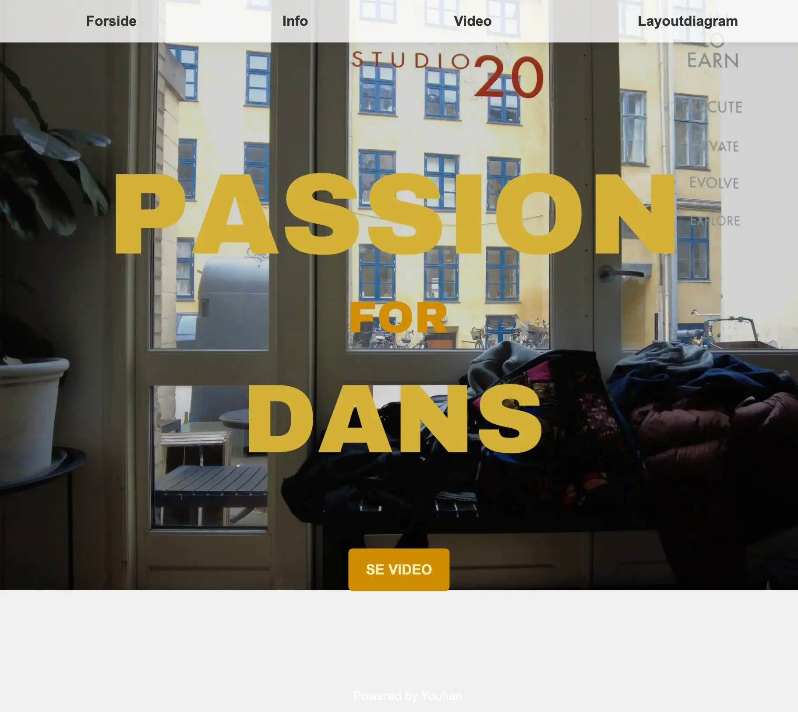

I denne læringsforløb har jeg fået indblik i forskellige værktøjer inden for film- video, såsom Final Cut Pro til videoredigering, derudover visuelt design, video rulletekster og lower third m.m. Jeg har tilegnet mig forskellige interviewsteknikker og filmteknikker. Som en del af forløbet, har jeg kunne præsentere to hjemmesider, den ene som er en Passion For Dans, Dette projekt, udført i samarbejde med Marie Wulff, hvilket indeholder en interview omkring den 23 årige Patricia, og hendes passion for dans. Min rolle under vores samarbejde var at filme Patricia, hvor jeg har valgt at have kameraet halvnært, så interviewet har en mere personlig atmosfære. Ved reflektion af projektet, ville jeg til en anden gang vælge at filme tættere på, så det bliver et nærbillede i stedet for, så det fremhæver følelserne mere. I videoredigeringen har jeg benyttet mig af hard cut, da de fleste klip er fra det samme vinkel, og derfor finder jeg de andre transitions forstyrrende, i forhold til Interviewet. Gennem denne forløb har jeg fået færdigheder inden for både optagelses- og redigeringsprocess.

I løbet af dette forløb har vores gruppe samarbejdet med Kathrine Laurent, en selvstændig frisør, der er
ejer til
Laurent Studio.
Min gruppe, bestående af Emil Johansson, Nicoline Marie Friis, Marie Wulff og jeg valgte at redesigne
Laurent Studios hjemmeside på grund af dens potentialer derudover
kendte Nicoline allerede Kathrine Laurent, hvilket gjorde kommunikation mellem virksomheden og gruppen
en del nemmere. I projektet har jeg haft ansvaret for både filmoptagelse og fotografering til
stemningsvideoen, sammen med Emil. Jeg har både anvendt håndholdt kamera til hårvask og afblegning, og et
stativbaseret kamera, til at dokumentere hele processen af en frisøroplevelse.
Ved kodningen har jeg stået for udviklingen af headeren, herunder burger menuen og logo, derudover også
Inspirationsiden, hvor jeg har benyttet mig af grid og hover effect til at stille organisere billederne, og
præsentere dem.
Tanken var, at dele inspirationssiden i mænd og kvinder, men eftersom vi ikke havde nok billeder til
rådighed af mandeklip og styling, blev ideen droppet.
Hjemmesideredesignet bevarede virksomhedens grundlæggende værdier og introducerede forbedringer for at skabe
en mere
overskuelig og luftig platform med en minimalistisk stil. Farvepaletten blev justeret fra en markant pink
nuance til en
mere neutral tone, der stadig indbefattede pink, med henblik på at gøre hjemmesiden mere "unisex", idet
Kathrine
tilbyder klipning til både mænd og kvinder.